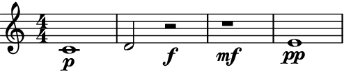
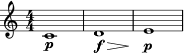
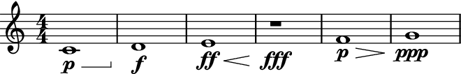
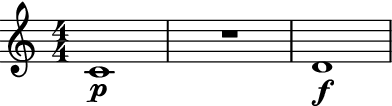

reposition_dynamics¶
- auxjad.mutate.reposition_dynamics(selection: abjad.select.Selection, *, allow_hairpins_under_rests: bool = False, check_hairpin_trends: bool = True, remove_repeated_dynamics: bool = True, allow_hairpin_to_rest_with_dynamic: bool = True) → None[source]¶
Mutates an input
abjad.Selectionin place and has no return value; this function shifts all dynamics from rests to the next pitched leaves. It will also adjust hairpins if necessary.- Basic usage:
This function will shift dynamics under rests to the next pitched leaf.
>>> staff = abjad.Staff(r"c'1\p d'2 r2\f r1 e'1") >>> abjad.show(staff)
>>> staff = abjad.Staff(r"c'1\p d'2 r2\f r1 e'1") >>> auxjad.mutate.reposition_dynamics(staff[:]) >>> abjad.show(staff)

Note
Auxjad automatically adds this function as an extension function to
abjad.mutate. It can thus be used from eitherauxjad.mutateorabjad.mutatenamespaces. Therefore, the two lines below are equivalent:>>> auxjad.mutate.reposition_dynamics(staff[:]) >>> abjad.mutate.reposition_dynamics(staff[:])
- Removing dynamics:
If the next pitched leaf already contain a dynamic, this function will simply remove the dynamic under the rest.
>>> staff = abjad.Staff(r"c'1\p d'2 r2\f r1\mf e'1\pp") >>> abjad.show(staff)
>>> staff = abjad.Staff(r"c'1\p d'2 r2\f r1\mf e'1\pp") >>> auxjad.mutate.reposition_dynamics(staff[:]) >>> abjad.show(staff)

remove_repeated_dynamics:By default indentical repeated dynamics are omitted.
>>> staff = abjad.Staff(r"c'1\p d'1 r1\f e'1\p") >>> auxjad.mutate.reposition_dynamics(staff[:]) >>> abjad.show(staff)

Set the optional keyword argument
remove_repeated_dynamicstoFalseto disable this behaviour.>>> staff = abjad.Staff(r"c'1\p d'1 r1\f e'1\p") >>> auxjad.mutate.reposition_dynamics( ... staff[:], ... remove_repeated_dynamics=False, ... ) >>> abjad.show(staff)
allow_hairpins_under_rests:This function will shorten hairpins until rests by default.
>>> staff = abjad.Staff(r"c'1\p\< d'2 r2 r1\f e'1") >>> abjad.show(staff)

>>> staff = abjad.Staff(r"c'1\p\< d'2 r2 r1\f e'1") >>> auxjad.mutate.reposition_dynamics(staff[:]) >>> abjad.show(staff)

Set the optional keyword argument
allow_hairpins_under_reststoTrueto allow hairpins to extend cross rests.>>> staff = abjad.Staff(r"c'1\p\< d'2 r2 r1\f e'1") >>> auxjad.mutate.reposition_dynamics( ... staff[:], ... allow_hairpins_under_rests=True, ... ) >>> abjad.show(staff)

allow_hairpin_to_rest_with_dynamic:Notice that if a hairpin leads to a rest with dynamic, that one is not removed.
>>> staff = abjad.Staff(r"c'1\p\< d'2 r2\f r1 e'1") >>> auxjad.mutate.reposition_dynamics(staff[:]) >>> abjad.show(staff)
Set the argument
allow_hairpin_to_rest_with_dynamictoFalseto disable this behaviour.>>> staff = abjad.Staff(r"c'1\p\< d'2 r2\f r1 e'1") >>> auxjad.mutate.reposition_dynamics( ... staff[:], ... allow_hairpin_to_rest_with_dynamic=False, ... ) >>> abjad.show(staff)
check_hairpin_trends:This function will remove any hairpins connecting dynamics that grow in the opposite direction to the hairpin’s trend, such as a diminuendo hairpin from piano to forte.
>>> staff = abjad.Staff(r"c'1\p\> d'1\f\> e'1\p") >>> auxjad.mutate.reposition_dynamics(staff[:]) >>> abjad.show(staff)
This behaviour can be disabled by setting the argument
check_hairpin_trendstoFalse.>>> staff = abjad.Staff(r"c'1\p\> d'1\f\> e'1\p") >>> auxjad.mutate.reposition_dynamics( ... staff[:], ... check_hairpin_trends=False, ... ) >>> abjad.show(staff)
Note
The behaviour described above is only applicable when a hairpin ends on a dynamic. Using the hairpin terminator
\!before a dynamic change will not cause a hairpin to be removed as it is not considered to be connecting dynamics of the opposite trend.>>> staff = abjad.Staff(r"c'1\p\> d'1\! e'1\f\> f'1\p") >>> auxjad.mutate.reposition_dynamics(staff[:]) >>> abjad.show(staff)

- Types of hairpins:
This function can handle multiple types of hairpins as well as niente dynamics.
>>> staff = abjad.Staff(r"c'1 d'1 e'1 r1\mf r1\ff f'1 r1 g'1") >>> abjad.attach(abjad.Dynamic('niente', hide=True), staff[0]) >>> abjad.attach(abjad.Dynamic('niente', hide=True), staff[7]) >>> abjad.attach(abjad.StartHairpin('o<'), staff[0]) >>> abjad.attach(abjad.StartHairpin('>o'), staff[4]) >>> abjad.attach(abjad.StopHairpin(), staff[7]) >>> auxjad.mutate.reposition_dynamics(staff[:]) >>> abjad.show(staff)

>>> staff = abjad.Staff( ... r"c'1\p d'1\f\> e'1\ff\< r1\fff f'1\p\> g'1\ppp" ... ) >>> abjad.attach(abjad.StartHairpin('--'), staff[0]) >>> auxjad.mutate.reposition_dynamics(staff[:]) >>> abjad.show(staff)
- Multi-measure rests:
Multi-measure rests are also supported.
>>> staff = abjad.Staff(r"c'1\p R1\f d'1") >>> abjad.show(staff)
>>> staff = abjad.Staff(r"c'1\p R1\f d'1") >>> auxjad.mutate.reposition_dynamics(staff[:]) >>> abjad.show(staff)

Warning
The input selection must be a contiguous logical voice. When dealing with a container with multiple subcontainers (e.g. a score containing multiple staves), the best approach is to cycle through these subcontainers, applying this function to them individually.